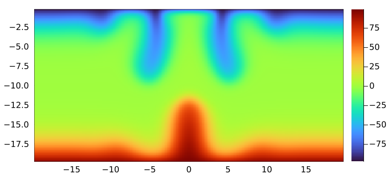

Agenda
📚 Distributed multi-xPU computing, MPI, multi-xPU thermal porous convection 3D
💻 Automatic documentation
🚧 Exercises:
Fake-parallelisation, Julia MPI,
ImplicitGlobalGrid.jlMulti-xPU thermal porous convection 3D
Automatic documentation and CI
👉 get started with exercises
Distributed computing
Fake parallelisation
Julia MPI (CPU + GPU)
Using ParallelStencil.jl together with ImplicitGlobalGrid.jl
Thermal porous convection 3D using GPU MPI
Automatic documentation and CI
If this is the case or not - hold-on, we certainly have some good stuff for everyone
Adds one additional layer of parallelisation:
Global problem does no longer "fit" within a single compute node (or GPU)
Local resources (mainly memory) are finite, e.g.,
CPUs: increase the number of cores beyond what a single CPU can offer
GPUs: overcome the device memory limitation
Simply said:
If one CPU or GPU is not sufficient to solve a problem, then use more than one and solve a subset of the global problem on each.
Distributed (memory) computing permits to take advantage of computing "clusters", many similar compute nodes interconnected by high-throughput network. That's also what supercomputers are.
So here we go. Let's assume we want to solve a certain problem, which we will call the "global problem". This global problem, we split then into several local problems that execute concurrently.
Two scaling approaches exist:
strong scaling
weak scaling
Increasing the amount of computing resources to resolve the same global problem would increase parallelism and may result in faster execution (wall-time). This parallelisation is called strong scaling; the resources are increased but the global problem size does not change, resulting in an increase in the number of (smaller) local problems that can be solved in parallel.
The strong scaling approach is often used when parallelising legacy CPU codes, as increasing the number of parallel local problems can lead to some speed-up, reaching an optimum beyond which additional local processes is no longer be beneficial.
However, we won't follow that path when developing parallel multi-GPU applications from scratch. Why?
Because GPUs' performance is very sensitive to the local problem size as we experienced when trying to tune the kernel launch parameters (threads, blocks, i.e., the local problem size).
When developing multi-GPU applications from scratch, it is likely more suitably to approach distributed parallelisation from a weak scaling perspective; defining first the optimal local problem size to resolve on a single GPU and then increasing the number of optimal local problems (and the number of GPUs) until reaching the global problem one originally wants to solve.
We can thus replicate a local problem multiple times in each dimension of the Cartesian space to obtain a global grid, which is therefore defined implicitly. Local problems define each others local boundary conditions by exchanging internal boundary values using intra-node communication (e.g., message passing interface - MPI), as depicted on the figure hereafter:
Many things could potentially go wrong in distributed computing. However, the ultimate goal (at least for us) is to keep up with parallel efficiency.
The parallel efficiency defines as the speed-up divided by the number of processors. The speed-up defines as the execution time using an increasing number of processors normalised by the single processor execution time. We will use the parallel efficiency in a weak scaling configuration.
Ideally, the parallel efficiency should stay close to 1 while increasing the number of computing resources proportionally with the global problem size (i.e. keeping the constant local problem sizes), meaning no time is lost (no overhead) in due to, e.g., inter-process communication, network congestion, congestion of shared filesystem, etc... as shown in the figure hereafter:

we will explore distributed computing with Julia's MPI wrapper MPI.jl. This will enable our codes to run on multiple CPUs and GPUs in order to scale on modern multi-CPU/GPU nodes, clusters and supercomputers. In the proposed approach, each MPI process handles one CPU or GPU.
We're going to work out the following steps to tackle distributed parallelisation in this lecture (in 5 tasks):
As a first step, we will look at the below 1-D diffusion code which solves the linear diffusion equations using a "fake-parallelisation" approach. We split the calculation on two distinct left and right domains, which requires left and right C arrays, CL and CR, respectively.
In this "fake parallelisation" code, the computations for the left and right domain are performed sequentially on one process, but they could be computed on two distinct processes if the needed boundary update (often referred to as halo update in literature) was done with MPI.

The idea of this fake parallelisation approach is the following:
# Compute physics locally
CL[2:end-1] .= CL[2:end-1] .+ dt*D*diff(diff(CL)/dx)/dx
CR[2:end-1] .= CR[2:end-1] .+ dt*D*diff(diff(CR)/dx)/dx
# Update boundaries (MPI)
CL[end] = ...
CR[1] = ...
# Global picture
C .= [CL[1:end-1]; CR[2:end]]We see that a correct boundary update will be the critical part for a successful implementation. In our approach, we need an overlap of 2 cells between CL and CR in order to avoid any wrong computations at the transition between the left and right domains.
Run the "fake parallelisation" 1-D diffusion code l8_diffusion_1D_2procs.jl, which is missing the boundary updates of the 2 fake processes and describe what you see in the visualisation.
Then, add the required boundary update:
# Update boundaries (MPI)
CL[end] = ...
CR[1] = ...in order make the code work properly and run it again. Note what has changed in the visualisation.
The next step will be to generalise the fake parallelisation with 2 fake processes to work with n fake processes. The idea of this generalised fake parallelisation approach is the following:
for ip = 1:np # compute physics locally
C[2:end-1,ip] .= C[2:end-1,ip] .+ dt*D*diff(diff(C[:,ip])/dxg)/dxg
end
for ip = 1:np-1 # update boundaries
# ...
end
for ip = 1:np # global picture
i1 = 1 + (ip-1)*(nx-2)
Cg[i1:i1+nx-2] .= C[1:end-1,ip]
endThe array C contains now n local domains where each domain belongs to one fake process, namely the fake process indicated by the second index of C (ip). The boundary updates are to be adapted accordingly. All the physical calculations happen on the local chunks of the arrays. We only need "global" knowledge in the definition of the initial condition.
The previous simple initial conditions can be easily defined without computing any Cartesian coordinates. To define other initial conditions we often need to compute global coordinates. In the code below, which serves to define a Gaussian anomaly in the centre of the domain, Cartesian coordinates can be computed for each cell based on the process ID (ip), the cell ID (ix), the array size (nx), the overlap of the local domains (2) and the grid spacing of the global grid (dxg); moreover, the origin of the coordinate system can be moved to any position using the global domain length (lx):
# Initial condition
for ip = 1:np
for ix = 1:nx
x[ix,ip] = ...
C[ix,ip] = exp(-x[ix,ip]^2)
end
i1 = 1 + (ip-1)*(nx-2)
xt[i1:i1+nx-2] .= x[1:end-1,ip]; if (ip==np) xt[i1+nx-1] = x[end,ip] end
Ct[i1:i1+nx-2] .= C[1:end-1,ip]; if (ip==np) Ct[i1+nx-1] = C[end,ip] end
endn fake processes)Modify the initial condition in the 1-D diffusion code l8_diffusion_1D_nprocs.jl to a centred Gaussian anomaly.
Then run this code which is missing the boundary updates of the n fake processes and describe what you see in the visualisation. Then, add the required boundary update in order make the code work properly and run it again. Note what has changed in the visualisation.
We are now ready to write a code that will truly distribute calculations on different processors using MPI.jl for inter-process communication.
Let us see what are the somewhat minimal requirements that will allow us to write a distributed code in Julia using MPI.jl. We will solve the following linear diffusion physics:
for it = 1:nt
qx .= .-D*diff(C)/dx
C[2:end-1] .= C[2:end-1] .- dt*diff(qx)/dx
endTo enable distributed parallelisation, we will do the following steps:
Initialise MPI and set up a Cartesian communicator
Implement a boundary exchange routine
Create a "global" initial condition
Finalise MPI
To (1.) initialise MPI and prepare the Cartesian communicator, we do:
MPI.Init()
dims = [0]
comm = MPI.COMM_WORLD
nprocs = MPI.Comm_size(comm)
MPI.Dims_create!(nprocs, dims)
comm_cart = MPI.Cart_create(comm, dims, [0], 1)
me = MPI.Comm_rank(comm_cart)
coords = MPI.Cart_coords(comm_cart)
neighbors_x = MPI.Cart_shift(comm_cart, 0, 1)where me represents the process ID unique to each MPI process (the analogue to ip in the fake parallelisation).
Then, we need to (2.) implement a boundary update routine, which can have the following structure:
@views function update_halo(A, neighbors_x, comm)
# Send to / receive from neighbour 1 ("left neighbor")
if neighbors_x[1] != MPI.MPI_PROC_NULL
# ...
end
# Send to / receive from neighbour 2 ("right neighbor")
if neighbors_x[2] != MPI.MPI_PROC_NULL
# ...
end
return
endThen, we (3.) initialize C with a "global" initial Gaussian anomaly that spans correctly over all local domains. This can be achieved, e.g., as given here:
x0 = coords[1]*(nx-2)*dx
xc = [x0 + ix*dx - dx/2 - 0.5*lx for ix=1:nx]
C = exp.(.-xc.^2)where x0 represents the first global x-coordinate on every process (computed in function of coords) and xc represents the local chunk of the global coordinates on each local process (this is analogue to the initialisation in the fake parallelisation).
Last, we need to (4.) finalise MPI prior to returning from the main function:
MPI.Finalize()All the above described is found in the code l8_diffusion_1D_mpi.jl, except for the boundary updates (see 2.).
Run the code l8_diffusion_1D_mpi.jl which is still missing the boundary updates three times: with 1, 2 and 4 processes (replacing np by the number of processes):
mpiexecjl -n <np> julia --project <my_script.jl>Visualise the results after each run with the l8_vizme1D_mpi.jl code (adapt the variable nprocs!). Describe what you see in the visualisation. Then, add the required boundary update in order make the code work properly and run it again. Note what has changed in the visualisation.
sendbuffer and receive buffer, storing the right value in the send buffer; 2) use MPI.Send and MPI.Recv! to send/receive the data; 3) store the received data in the right position in the array.Congratulations! You just did a distributed memory diffusion solver in only 70 lines of code.
Let us now do the same in 2D: there is not much new there, but it may be interesting to work out how boundary update routines can be defined in 2D as one now needs to exchange vectors instead of single values.
Run the code l8_diffusion_2D_mpi.jl which is still missing the boundary updates three times: with 1, 2 and 4 processes.
Visualise the results after each run with the l8_vizme2D_mpi.jl code (adapt the variable nprocs!). Describe what you see in the visualisation. Then, add the required boundary update in order make the code work properly and run it again. Note what has changed in the visualisation.
The last step is to create a multi-GPU solver out of the above multi-CPU solver. CUDA-aware MPI is of great help in this task, because it allows to directly pass GPU arrays to the MPI functions.
Besides facilitating the programming, it can leverage Remote Direct Memory Access (RDMA) which can be of great benefit in many HPC scenarios.
Translate the code diffusion_2D_mpi.jl from Task 4 to GPU using GPU array programming. Note what changes were needed to go from CPU to GPU in this distributed solver.
copyto! function in order to copy the data from the GPU memory into the send buffers (CPU memory) or to copy the receive buffer data to the GPU array.Head to the exercise section for further directions on this task which is part of this week's homework assignments.
This completes the introduction to distributed parallelisation with Julia.
Note that high-level Julia packages as for example ImplicitGlobalGrid.jl can render distributed parallelisation with GPU and CPU for HPC a very simple task. Let's check it out!
ImplicitGlobalGrid.jlLet's have look at ImplicitGlobalGrid.jl's repository.
ImplicitGlobalGrid.jl can render distributed parallelisation with GPU and CPU for HPC a very simple task. Moreover, ImplicitGlobalGrid.jl elegantly combines with ParallelStencil.jl.
Finally, the cool part: using both packages together enables to hide communication behind computation. This feature enables a parallel efficiency close to 1.
For this demo, we'll start from the l8_diffusion_2D_perf_xpu.jl code.
Only a few changes are required to enable multi-xPU execution, namely:
initialise the implicit global grid
use global coordinates to compute the initial condition
update halo (and overlap communication with computation)
finalise the global grid
tune visualisation
But before we start programming the multi-xPU implementation, let's get setup with GPU MPI on Piz Daint. Follow steps are needed:
Launch a salloc on 4 nodes
Install the required MPI-related packages
Test your setup running l8_hello_mpi.jl and l8_hello_mpi_gpu.jl scripts on 1-4 nodes
To (1.) initialise the global grid, one first needs to use the package
using ImplicitGlobalGridThen, one can add the global grid initialisation in the # Derived numerics section
me, dims = init_global_grid(nx, ny, 1) # Initialization of MPI and more...
dx, dy = Lx/nx_g(), Ly/ny_g()l8_hello_mpi_gpu.jl code to get an idea on how to select a GPU based on node-local MPI infos.Then, for (2.), one can use x_g() and y_g() to compute the global coordinates in the initialisation (to correctly spread the Gaussian distribution over all local processes)
C = @zeros(nx,ny)
C .= Data.Array([exp(-(x_g(ix,dx,C)+dx/2 -Lx/2)^2 -(y_g(iy,dy,C)+dy/2 -Ly/2)^2) for ix=1:size(C,1), iy=1:size(C,2)])The halo update (3.) can be simply performed adding following line after the compute! kernel
update_halo!(C)Now, when running on GPUs, it is possible to hide MPi communication behind computations! This option implements as:
@hide_communication (8, 2) begin
@parallel compute!(C2, C, D_dx, D_dy, dt, _dx, _dy, size_C1_2, size_C2_2)
C, C2 = C2, C # pointer swap
update_halo!(C)
endThe @hide_communication (8, 2) will first compute the first and last 8 and 2 grid points in x and y dimension, respectively. Then, while exchanging boundaries the rest of the local domains computations will be perform (overlapping the MPI communication).
To (4.) finalise the global grid,
finalize_global_grid()needs to be added before the return of the "main".
The last changes to take car of is to (5.) handle visualisation in an appropriate fashion. Here, several options exists.
One approach would for each local process to dump the local domain results to a file (with process ID me in the filename) in order to reconstruct to global grid with a post-processing visualisation script (as done in the previous examples). Libraries like, e.g., ADIOS2 may help out there.
Another approach would be to gather the global grid results on a master process before doing further steps as disk saving or plotting.
To implement the latter and generate a gif, one needs to define a global array for visualisation:
if do_visu
if (me==0) ENV["GKSwstype"]="nul"; if isdir("viz2D_mxpu_out")==false mkdir("viz2D_mxpu_out") end; loadpath = "./viz2D_mxpu_out/"; anim = Animation(loadpath,String[]); println("Animation directory: $(anim.dir)") end
nx_v, ny_v = (nx-2)*dims[1], (ny-2)*dims[2]
if (nx_v*ny_v*sizeof(Data.Number) > 0.8*Sys.free_memory()) error("Not enough memory for visualization.") end
C_v = zeros(nx_v, ny_v) # global array for visu
C_inn = zeros(nx-2, ny-2) # no halo local array for visu
Xi_g, Yi_g = LinRange(dx+dx/2, Lx-dx-dx/2, nx_v), LinRange(dy+dy/2, Ly-dy-dy/2, ny_v) # inner points only
endThen, the plotting routine can be adapted to first gather the inner points of the local domains into the global array (using gather! function) and then plot and/or save the global array (here C_v) from the master process me==0:
# Visualize
if do_visu && (it % nout == 0)
C_inn .= Array(C)[2:end-1,2:end-1]; gather!(C_inn, C_v)
if (me==0)
opts = (aspect_ratio=1, xlims=(Xi_g[1], Xi_g[end]), ylims=(Yi_g[1], Yi_g[end]), clims=(0.0, 1.0), c=:turbo, xlabel="Lx", ylabel="Ly", title="time = $(round(it*dt, sigdigits=3))")
heatmap(Xi_g, Yi_g, Array(C_v)'; opts...); frame(anim)
end
endTo finally generate the gif, one needs to place the following after the time loop:
if (do_visu && me==0) gif(anim, "diffusion_2D_mxpu.gif", fps = 5) endIGG_CUDAAWARE_MPI=1. Note that the examples using ImplicitGlobalGrid.jl would also work if USE_GPU = false; however, the communication and computation overlap feature is then currently not yet available as its implementation relies at present on leveraging CUDA streams.Let's recall what we learned today about distributed computing in Julia using GPUs:
We used fake parallelisation to understand the correct boundary exchange procedure.
We implemented 1D and 2D diffusion solvers in Julia using MPI for distributed memory parallelisation on both CPUs and GPUs (using blocking communication).
We saw how combining ParallelStencil.jl with ImplicitGlobalGrid.jl permits to implement distributed memory parallelisation on multiple CPU and GPUs.
This lecture we will learn:
documentation vs code-comments
why to write documentation
some Julia tools:

Why should I write code comments?
"Code Tells You How, Comments Tell You Why"
code should be made understandable by itself, as much as possible
comments then should be to tell the "why" you're doing something
but I do a lot of structuring comments as well
math-y variables tend to be short and need a comment as well
Why should I write documentation?
documentation should give a bigger overview of what your code does
at the function-level (doc-strings)
at the package-level (README, full-fledged documentation)
to let other people and your future self (probably most important) understand what your code is about
Worse than no documentation/code comments is documentation which is outdated.
I find the best way to keep documentation up to date is:
have documentation visible to you, e.g. GitHub README
document what you need yourself
use examples and run them as part of CI (doc-tests, example-scripts)
A Julia doc-string (Julia manual):
is just a string before the object (no new-line); interpreted as markdown-string
can be attached to most things (functions, variables, modules, macros, types)
can be queried with ?
"""
transform(r, θ) = (r*cos(θ), r*sin(θ))
Transform polar to cartesian coordinates.
"""
transform(r, θ) = (r*cos(θ), r*sin(θ))
"Typical size of beer crate"
const BEERBOX = 12?BEERBOXOne can add examples to doc-strings (they can even be part of testing: doc-tests).
run it in the REPL and copy paste to the docstring
"""
transform(r, θ) = (r*cos(θ), r*sin(θ))
Transform polar to cartesian coordinates.
# Example
```jldoctest
julia> transform(4.5, pi/5)
(3.6405764746872635, 2.6450336353161292)
```
"""
transform(r, θ) = (r*cos(θ), r*sin(θ))?transformThe easiest way to write long-form documentation is to just use GitHub's markdown rendering.
A nice example is this short course by Ludovic (incidentally about solving PDEs on GPUs 🙂).
images are rendered
in-page links are easy, e.g. [_back to workshop material_](#workshop-material)
top-left has a burger-menu for page navigation
can be edited within the web-page (pencil-icon)
👉 this is a good and low-overhead way to produce pretty nice documentation
There are several tools which render .jl files (with special formatting) into markdown files. These files can then be added to Github and will be rendered there.
we're using Literate.jl
format is described here
files stay valid Julia scripts, i.e. they can be executed without Literate.jl
Example
output markdown in: course-101-0250-00-L8Documentation.jl: scripts/car_travels.jl
output markdown in: course-101-0250-00-L8Documentation.jl: scripts/car_travels.md
Literate.markdown("car_travels.jl", directory_of_this_file, execute=true, documenter=false, credit=false)But this is not automatic! Manual steps: run Literate, add files, commit and push...
As is done on course-101-0250-00-L8Documentation.jl
name: Run Literate.jl
# adapted from https://lannonbr.com/blog/2019-12-09-git-commit-in-actions
on: push
jobs:
lit:
runs-on: ubuntu-latest
steps:
# Checkout the branch
- uses: actions/checkout@v2
- uses: julia-actions/setup-julia@v1
with:
version: '1.8'
arch: x64
- uses: actions/cache@v1
env:
cache-name: cache-artifacts
with:
path: ~/.julia/artifacts
key: ${{ runner.os }}-test-${{ env.cache-name }}-${{ hashFiles('**/Project.toml') }}
restore-keys: |
${{ runner.os }}-test-${{ env.cache-name }}-
${{ runner.os }}-test-
${{ runner.os }}-
- uses: julia-actions/julia-buildpkg@v1
- name: run Literate
run: julia --color=yes --project -e 'cd("scripts"); include("literate-script.jl")'
- name: setup git config
run: |
# setup the username and email. I tend to use 'GitHub Actions Bot' with no email by default
git config user.name "GitHub Actions Bot"
git config user.email "<>"
- name: commit
run: |
# Stage the file, commit and push
git add scripts/md/*
git commit -m "Commit markdown files fom Literate"
git push origin masterIf you want to have full-blown documentation, including, e.g., automatic API documentation generation, versioning, then use Documenter.jl.
Examples:
Notes:
it's geared towards Julia-packages, less for a bunch-of-scripts as in our lecture
Documenter.jl also integrates with Literate.jl.
for more free-form websites, use https://github.com/tlienart/Franklin.jl (as the course website does)
if you want to use it, it's easiest to generate your package with PkgTemplates.jl which will generate the Documenter-setup for you.
lecture_8 folder. The git commit hash (or SHA) of the final push needs to be uploaded on Moodle (more).👉 See Logistics for submission details.
The goal of this exercise is to:
Familiarise with distributed computing
Learn about MPI on the way
In this exercise, you will:
finalise the fake parallelisation scripts discussed in lecture 8 (2 procs and n procs)
finalise the 2D Julia MPI script
Create a Julia MPI GPU version of the 2D Julia MPI script discussed here
Create a new lectrue_8 folder for this first exercise in your shared private GitHub repository for this week's exercises.
Finalise the l8_diffusion_1D_2procs.jl and l8_diffusion_1D_nprocs.jl scripts discussed during lecture 8. Make sure to correctly implement the halo update in order to exchange the internal boundaries among the fake parallel processes (left and right and ip in the "2procs" and "nprocs" codes, respectively). See here for details.
Report in two separate figures the final distribution of concentration C for both fake parallel codes. Include these figure in a first section of your lecture's 8 README.md adding a description sentence to each.
Finalise the l8_diffusion_2D_mpi.jl script discussed during lecture 8. In particular, finalise the update_halo functions to allow for correct internal boundary exchange among the distributed parallel MPI processes. Add the final code to your GitHub lecture 8 folder.
For each of the (4) neighbour exchanges:
start by defining a sendbuffer sendbuf to hold the vector you need to send
initialise a receive buffer recvbuf to later hold the vector received from the corresponding neighbouring process
use MPI.Send and MPI.Recv! functions to perform the boundary exchange
Assign the values within the receive buffer to the corresponding row or column of the array A
In a new section of your lecture's 8 README.md, add a .gif animation showing the diffusion of the quantity C, running on 4 MPI processes, for the physical and numerical parameters suggested in the initial file. Add a short description of the results and provide the command used to launch the script in the README.md as well.
Create a multi-GPU implementation of the l8_diffusion_2D_mpi.jl script as suggested here. To this end, create a new script l8_diffusion_2D_mpi_gpu.jl that you will upload to your lecture 8 GitHub repository upon completion.
Translate the l8_diffusion_2D_mpi.jl code from exercise 1 (task 3) to GPU using GPU array programming. You can use a similar approach as in the CPU code to perform the boundary updates. You should use copyto! function in order to copy the data from the GPU memory into the send buffers (CPU memory) or to copy the receive buffer data to the GPU array.
The steps to realise this task summarise as following:
use GPU array initialisation (CUDA.zeros, CuArray(), ...)
gather the GPU arrays back on the host memory for visualisation or saving (using Array())
modify the update_halo function; use copyto! to copy device data to the host into the send buffer or to copy host data to the device from the receive buffer
In a new (3rd) section of your lecture's 8 README.md, add .gif animation showing the diffusion of the quantity C, running on 4 GPUs (MPI processes), for the physical and numerical parameters suggested in the initial file. Add a short description of the results and provide the command used to launch the script in the README.md as well. Note what changes were needed to go from CPU to GPU in this distributed solver.
👉 See Logistics for submission details.
The goal of this exercise is to:
Familiarise with distributed computing
Combine ImplicitGlobalGrid.jl and ParallelStencil.jl
Learn about GPU MPI on the way
scripts folder within your PorousConvection project.In this exercise, you will:
Create a multi-xPU version of your thermal porous convection 3D xPU code you finalised in lecture 7
Keep it xPU compatible using ParallelStencil.jl
Deploy it on multiple xPUs using ImplicitGlobalGrid.jl
👉 You'll find a version of the PorousConvection_3D_xpu.jl code in the solutions folder on Polybox after exercises deadline if needed to get you started.
Copy your working PorousConvection_3D_xpu.jl code developed for the exercises in Lecture 7 and rename it PorousConvection_3D_multixpu.jl.
Add at the beginning of the code
using ImplicitGlobalGrid,MPIAlso add global maximum computation using MPI
max_g(A) = (max_l = maximum(A); MPI.Allreduce(max_l, MPI.MAX, MPI.COMM_WORLD))In the # numerics section, initialise the global grid right after defining nx,ny,nz and use now global grid nx_g(),ny_g() and nz_g() for defining maxiter and ncheck, as well as in any other places when needed.
nx,ny = 2*(nz+1)-1,nz
me, dims = init_global_grid(nx, ny, nz) # init global grid and more
b_width = (8,8,4) # for comm / comp overlapModify the temperature initialisation using ImplicitGlobalGrid's global coordinate helpers (x_g, etc...), including one internal boundary condition update (update halo):
T = @zeros(nx ,ny ,nz )
T .= Data.Array([ΔT*exp(-(x_g(ix,dx,T)+dx/2-lx/2)^2 -(y_g(iy,dy,T)+dy/2-ly/2)^2 -(z_g(iz,dz,T)+dz/2-lz/2)^2) for ix=1:size(T,1),iy=1:size(T,2),iz=1:size(T,3)])
T[:,:,1].=ΔT/2; T[:,:,end].=-ΔT/2
update_halo!(T)
T_old = copy(T)Prepare for visualisation, making sure only me==0 creates the output directory. Also, prepare an array for storing inner points only (no halo) T_inn as well as global array to gather subdomains T_v
if do_viz
ENV["GKSwstype"]="nul"
if (me==0) if isdir("viz3Dmpi_out")==false mkdir("viz3Dmpi_out") end; loadpath="viz3Dmpi_out/"; anim=Animation(loadpath,String[]); println("Animation directory: $(anim.dir)") end
nx_v,ny_v,nz_v = (nx-2)*dims[1],(ny-2)*dims[2],(nz-2)*dims[3]
if (nx_v*ny_v*nz_v*sizeof(Data.Number) > 0.8*Sys.free_memory()) error("Not enough memory for visualization.") end
T_v = zeros(nx_v, ny_v, nz_v) # global array for visu
T_inn = zeros(nx-2, ny-2, nz-2) # no halo local array for visu
xi_g,zi_g = LinRange(-lx/2+dx+dx/2, lx/2-dx-dx/2, nx_v), LinRange(-lz+dz+dz/2, -dz-dz/2, nz_v) # inner points only
iframe = 0
endUse the max_g function in the timestep dt definition (instead of maximum) as one now needs to gather the global maximum among all MPI processes.
Moving to the time loop, add halo update function update_halo! after the kernel that computes the fluid fluxes. You can additionally wrap it in the @hide_communication block to enable communication/computation overlap (using b_width defined above)
@hide_communication b_width begin
@parallel compute_Dflux!(qDx,qDy,qDz,Pf,T,k_ηf,_dx,_dy,_dz,αρg,_1_θ_dτ_D)
update_halo!(qDx,qDy,qDz)
endApply a similar step to the temperature update, where you can also include boundary condition computation as following (âš ï¸ no other construct is currently allowed)
@hide_communication b_width begin
@parallel update_T!(T,qTx,qTy,qTz,dTdt,_dx,_dy,_dz,_1_dt_β_dτ_T)
@parallel (1:size(T,2),1:size(T,3)) bc_x!(T)
@parallel (1:size(T,1),1:size(T,3)) bc_y!(T)
update_halo!(T)
endUse now the max_g function instead of maximum to collect the global maximum among all local arrays spanning all MPI processes.
# time step
dt = if it == 1
0.1*min(dx,dy,dz)/(αρg*ΔT*k_ηf)
else
min(5.0*min(dx,dy,dz)/(αρg*ΔT*k_ηf),ϕ*min(dx/max_g(abs.(qDx)), dy/max_g(abs.(qDy)), dz/max_g(abs.(qDz)))/3.1)
endMake sure all printing statements are only executed by me==0 in order to avoid each MPI process to print to screen, and use nx_g() instead of local nx in the printed statements when assessing the iteration per number of grid points.
Update the visualisation and output saving part
# visualisation
if do_viz && (it % nvis == 0)
T_inn .= Array(T)[2:end-1,2:end-1,2:end-1]; gather!(T_inn, T_v)
if me==0
p1=heatmap(xi_g,zi_g,T_v[:,ceil(Int,ny_g()/2),:]';xlims=(xi_g[1],xi_g[end]),ylims=(zi_g[1],zi_g[end]),aspect_ratio=1,c=:turbo)
# display(p1)
png(p1,@sprintf("viz3Dmpi_out/%04d.png",iframe+=1))
save_array(@sprintf("viz3Dmpi_out/out_T_%04d",iframe),convert.(Float32,T_v))
end
endFinalise the global grid before returning from the main function
finalize_global_grid()
returnIf you made it up to here, you should now be able to launch your PorousConvection_3D_multixpu.jl code on multiple GPUs. Let's give it a try 🔥
Make sure to have set following parameters
lx,ly,lz = 40.0,20.0,20.0
Ra = 1000
nz = 63
nx,ny = 2*(nz+1)-1,nz
b_width = (8,8,4) # for comm / comp overlap
nt = 500
nvis = 50Then, launch the script on Piz Daint on 8 GPU nodes upon adapting the the runme_mpi_daint.sh or sbatch sbatch_mpi_daint.sh scripts (see here) using CUDA-aware MPI 🚀
The final 2D slice (at ny_g()/2) produced should look as following and take about 25min to run:

Now that you made sure the code runs as expected, launch PorousConvection_3D_multixpu.jl for 4000 steps on 8 GPUs at higher resolution (global grid of ) setting:
nz = 127
nx,ny = 2*(nz+1)-1,nz
nt = 4000
nvis = 100and keeping other parameters unchanged.
Use sbtach command to launch a non-interactive job which may take about 5 hours to execute.
Produce a figure or animation showing the final stage of temperature distribution in 3D and add it to a new section titled ## Porous convection 3D MPI in the PorousConvection project subfolder's README.md. You can use the Makie visualisation helper script from Lecture 7 for this purpose.
👉 See Logistics for submission details.
The goal of this exercise is to:
write some documentation
using doc-strings
using Literate.jl
One task you've already done, namely to update the README.md of this set of exercises!
Tasks:
add doc-string to the functions you created for this exercise
turn the script of Exercise 3 into a Literate.jl script. Compile it to markdown, git-add the output (both .md-file and any figures) and push it.